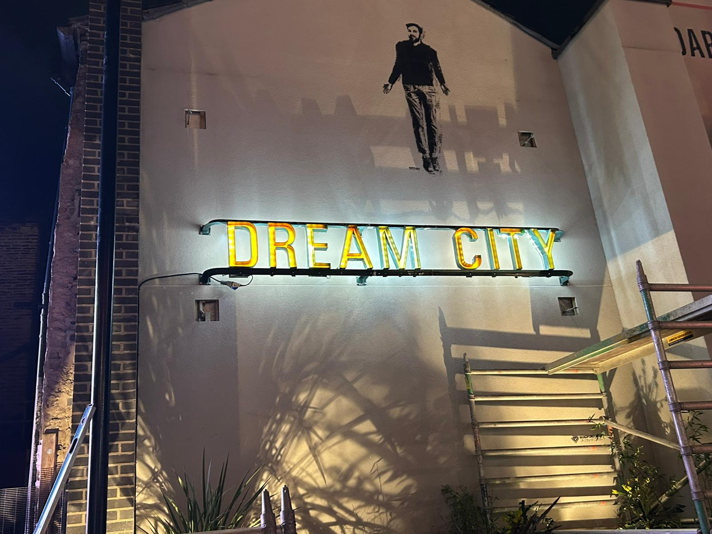
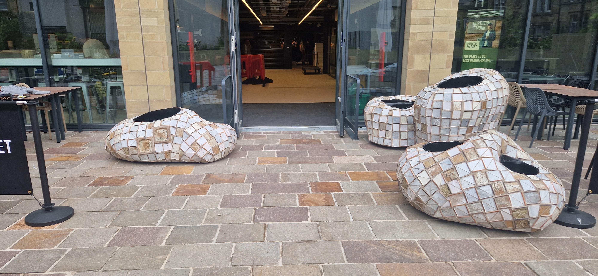
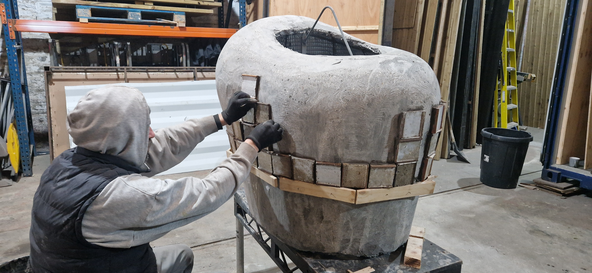
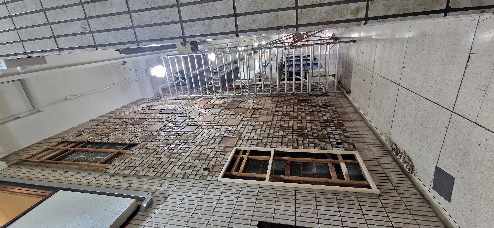
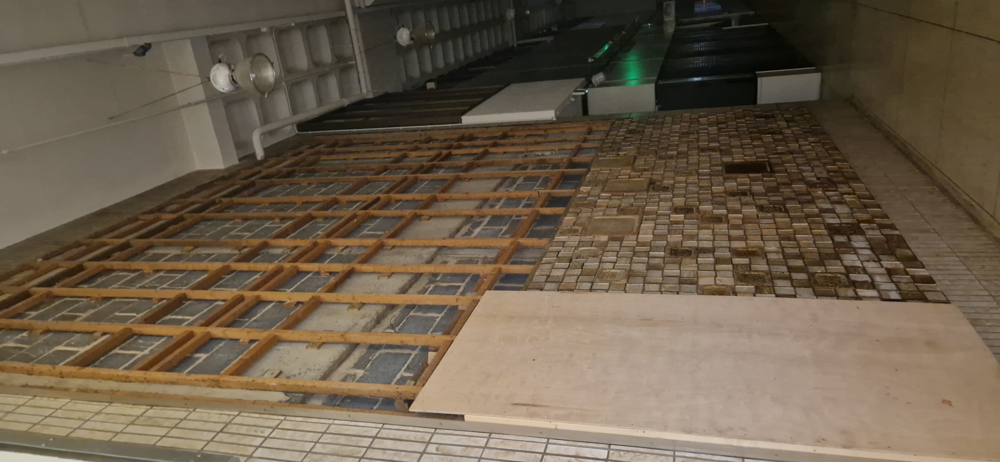
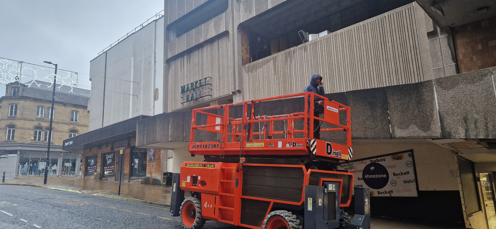

Signs of the Times is a public art commission for Darley Street Market in Bradford city centre, delivered in collaboration with internationally acclaimed Berlin-based artist Bernd Trasberger. Raven Staging were commissioned to work directly with Bernd on the fabrication and installation of two distinct permanent artworks.
Bernd Trasberger is a German artist whose practice centres on architecture, public space and the design of urban places. Sustainability and the re-use and re-contextualisation of architectural fragments in a sculptural way is central to his work — his engagement with sites involves intensive research into their sociological, architectural-historical and political context.
The source material for the project was salvaged directly from the Kirkgate Centre prior to its demolition: the original ceramic relief tile panels manufactured by the Transform Ceramic Company using Fritz Stella's patent, and the original exterior market lettering from the building's facade. These were repurposed into two new works: a series of sculptural planters clad entirely in the reclaimed tiles, and a crossword-style back-lit outdoor light piece using the original Kirkgate market lettering, both installed in Bradford's newly opened Darley Street Market.
All fabrication was carried out by Raven Staging, with every element finished to a standard appropriate to a major permanent public art commission in a prestige city centre venue. The project was funded by Bradford Council, Bradford 2025, and the Henry Moore Foundation.





Working on something similar?
Start a Conversation